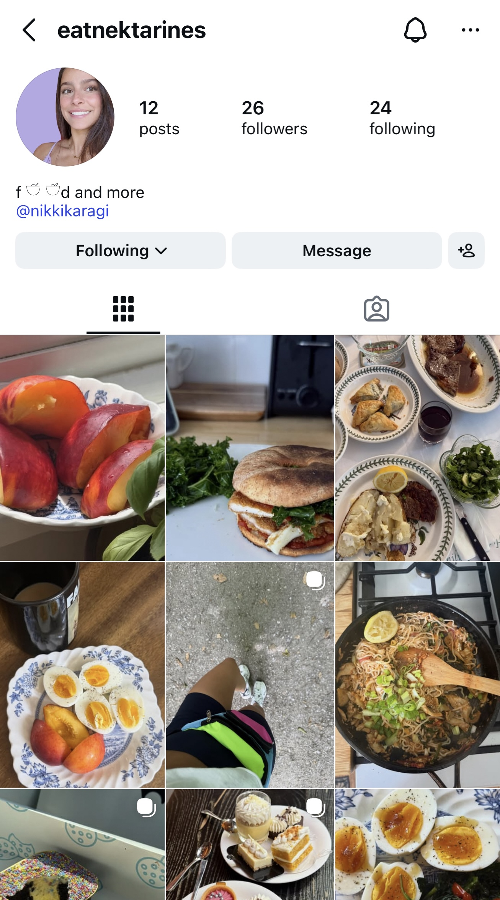

First Post!
This is my first post on my new blog eatnektarine. I started this blog because I am bored; I am in the in between period of graduating from college and starting my new post-grad job. I also have started an Instagram which is for a lot of the food that I make as well as other miscallaneous lifestyle concepts. I started a blog two summers ago and have some old posts from there that I want to post, but my computer is currently broken so I am waiting to fix that (once my job starts). This blog is also more-so for my personal well being, rather than hoping that others read it, it is a personal diary/point of accountability for myself. I attached my current @eatnektarine feed below. I hope you enjoy this blog.
